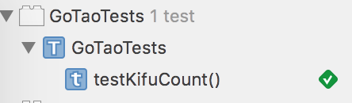

用Swift写围棋App－06解析器初版
tags:开发随笔
了解了棋谱的格式后，我们终于可以撸代码了！
我们来尝试一下TDD，也就是Test Driven Development,测试驱动开发。
先定义相关的Model，开始的时候不用尽善尽美，满足最初的测试就好了。后面再不断改进好了。
先定义一个类Location，它表示每一步棋放在那个位置：
class Location: NSObject {
var x:Int
var y:Int
init(x:Int,y:Int) {
self.x = x
self.y = y
}
}
然后定义Move，它表示一步棋:
class Move: NSObject {
var location: Location
var type:StoneType
init(type:StoneType,loc:Location) {
self.location = loc
self.type = type
}
}
这里StoneType用来区别黑棋和白棋，是一个枚举类型：
enum StoneType: Character {
case Black = "B"
case Withe = "W"
}
定义一个SGFParser类，它就是我们的解析器了。先写一个假方法：
public class SGFParser {
func parse(kifu:String)->GameInfo{
return GameInfo()
}
}
然后写测试用例:
import XCTest
@testable import GoTao
class GoTaoTests: XCTestCase {
let parser = SGFParser()
func testKifuCount() {
let kifu = ";B[qd];W[dc];B[pq];"
let result = parser.parse(kifu)
assert(3==result.allMoves.count)
}
}
按command +U，运行测试。编译通过，但是测试失败:
assertion failed: : file GoTaoTests.swift, line 26
这正是我们预期的！因为我的解析器还没写呢！
改进一下解析器为如下版本：
import Foundation
public class SGFParser {
func parse(kifu:String)->GameInfo{
let game = GameInfo()
let moves = kifu.characters.split { $0 == ";" }
.map(String.init)
.filter{($0.hasPrefix("B[")||$0.hasPrefix("W["))&&$0.characters.count==5}
.map{Move(step: $0 as String)}
print(moves)
game.allMoves = moves
return game
}
}
这里我期望可以直接从B[ab]这样的字符串直接构建Move实例，所以需要改进一下Move这个类，如下：
import Foundation
class Move: NSObject {
var location: Location
var type:StoneType
init(type:StoneType,loc:Location) {
self.location = loc
self.type = type
}
init(step:String){
let color = StoneType(rawValue:step[step.startIndex])
let x = step.asciiValueAt(pos: 2) - "a".asciiValue
let y = step.asciiValueAt(pos: 3) - "a".asciiValue
self.type = color!
self.location = Location(x: x,y: y)
}
}
再按command + U，奇迹出现了：

居然通过了测试！
虽然这只是最简单的一个版本，它却麻雀虽小，五脏俱全，已经具备了一个优秀应用的架子。
很好！
再次Commit和 Push代码到github https://github.com/marknote/GoTao
下面就需要多写几个测试用例，来改进解析器了。